Your browser doesn't support the features required by impress.js, so you are presented
with a simplified version of this presentation.
For the best experience please use the latest Chrome, Safari or Firefox
browser.
I love scripting
EclipseCon Europe 2015
by Christian Pontesegger

EASE
Eclipse Advanced Scripting Environment
JSDT
PyDev
GGTS
RDT
Eclipse

Rhino
Jython
Groovy
JRuby
An interactive script shell
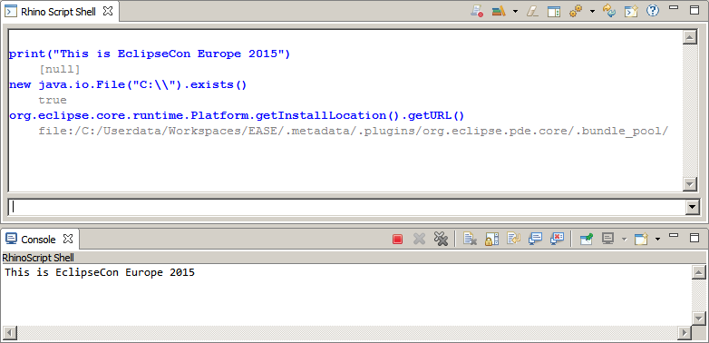
... with access to the Java runtime
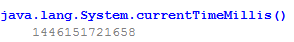
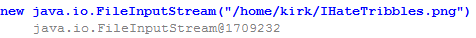
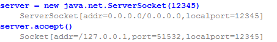
... your JARs
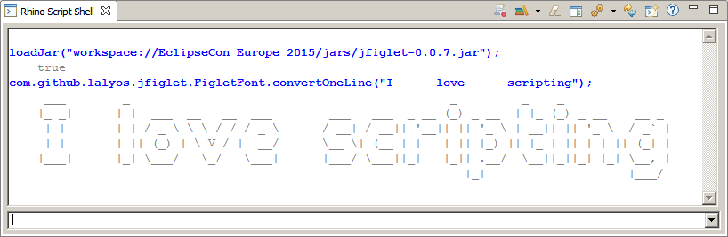
... and Eclipse
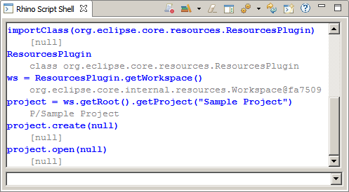
with all its plug-ins
Powerful code completion
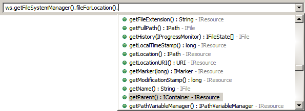
... with help tooltips
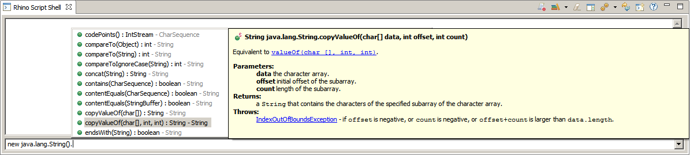
Use modules for common tasks
- Launch support
- Preferences
- access Services
- perform UI tasks
- Script multithreading
- Resource handling
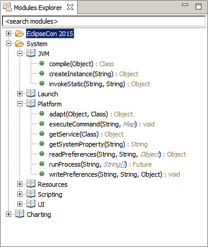
... loaded dynamically during runtime
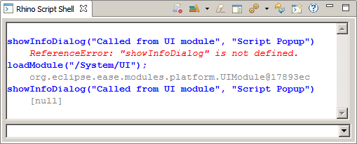
Wrap any java object
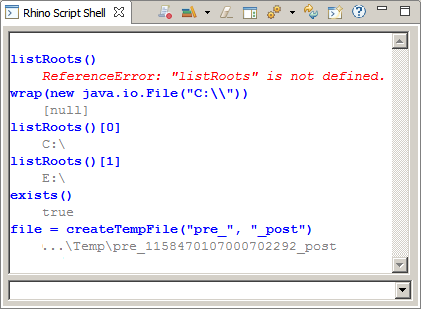
Register POJOs
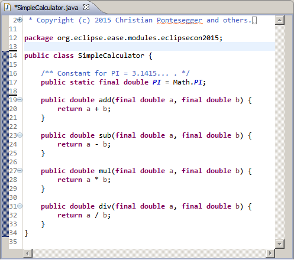
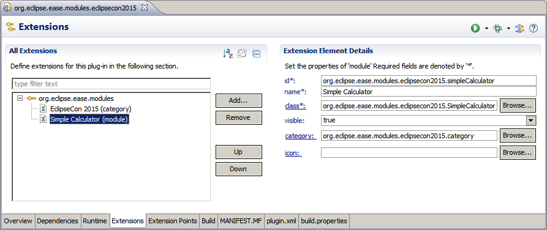
or write sophisticated modules
- select methods/fields to export
- have optional parameters
- provide method aliases
- deprecate methods
Read the
detailed tutorial
Consistent documentation
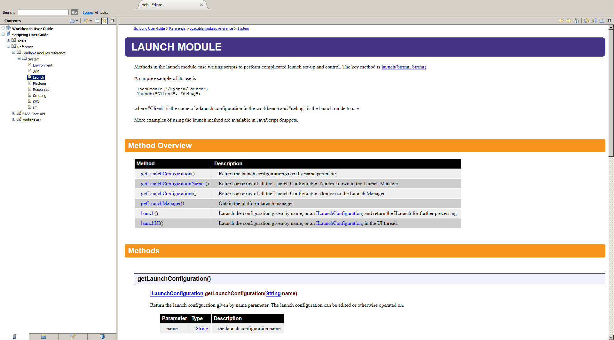
created @ build time
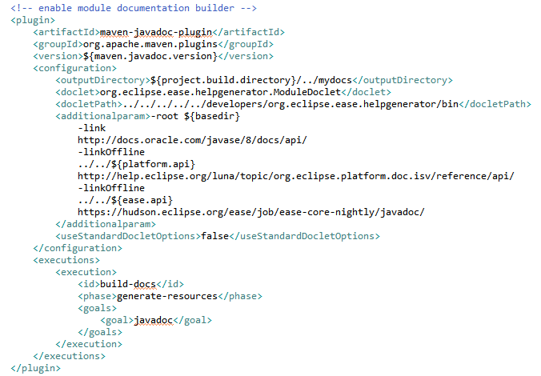
Launch support
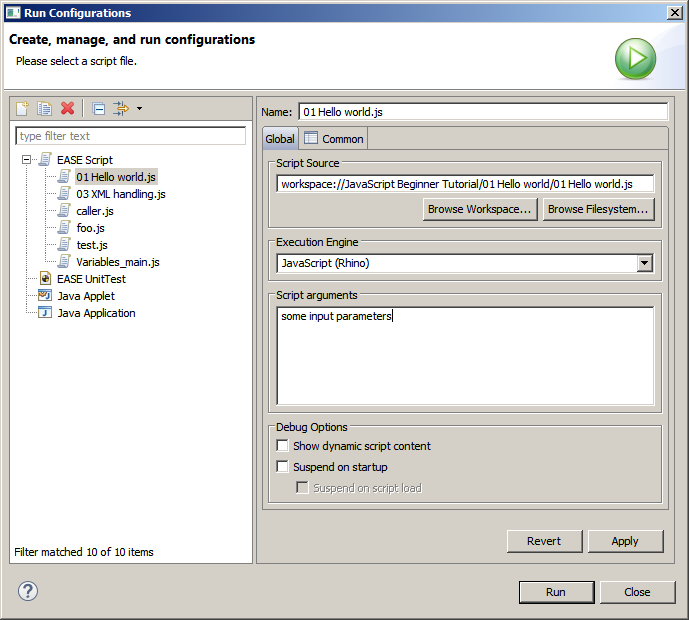
Integrated debugger
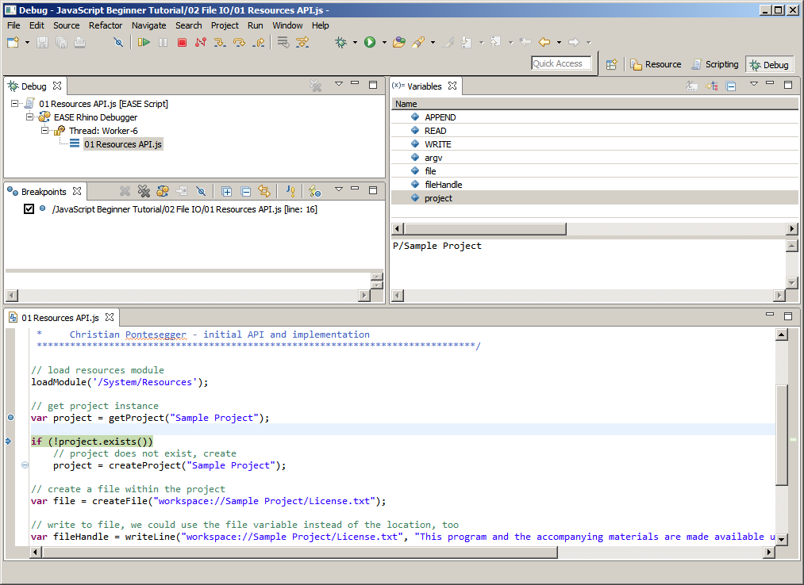
Create script libraries

- record shell scripts
- load from known location
- customize display structure
- modify scripts
- execute scripts
Share with colleagues
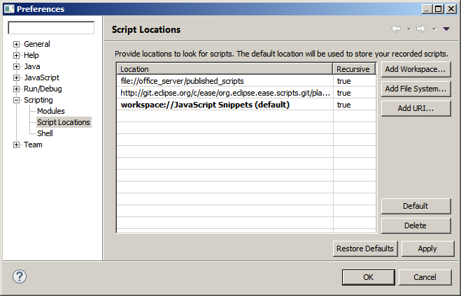
... or the world
Interact with Java source
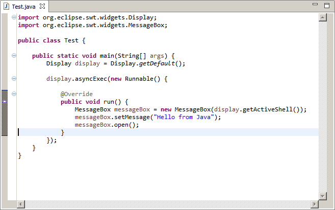
... load classes from workspace
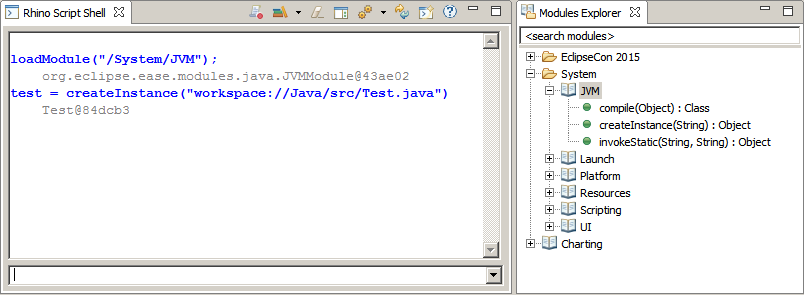
INVOKE !
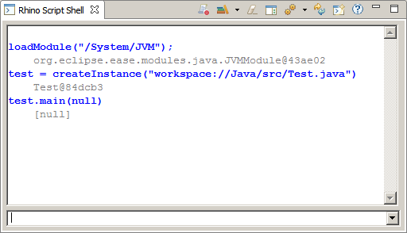
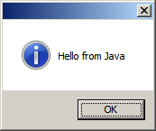
... and we do not launch a new JRE.
Supported engines
|
Launch |
Shell |
Modules |
Scripts |
Unit Test |
Debug |
| Rhino |
|
|
|
|
|
|
| Nashorn |
|
|
|
|
|
|
| Jython |
|
|
|
|
|
|
| Groovy |
|
|
|
|
|
|
| JRuby |
|
|
|
|
|
|
| JVM |
|
|
|
|
|
|